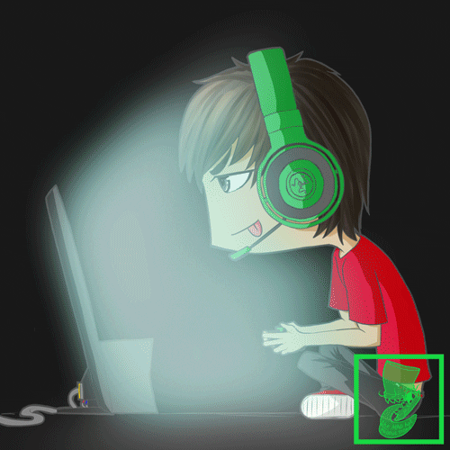

En los videojuegos es importante que los equipos tengan diferentes tipos de roles como lo es: Leader in game (IGL), AWP, Punta de lanza "Entry fragger", Apoyo o support, a continuacion hablaremos de sus funciones, los videojuegos han transformado la historia, actualmente existe un mundo competitivo en el cual las personas mas habiles estan ganando cantidades sorprendentes de dinero, como en el 2019 hubo un torneo mundial de videojuegos en el cual un joven consiguio una cantidad de 3 millones de dolares, es por eso que es un nuevo deporte y la importancia de los roles en los equipos competitivos.
1.IGL: Este es el rol mas importante ya que es el que coordina y dirige a su equipo, el organiza los ataques y decide cuando ir a pelear contra otros jugadores, busca el beneficio del equipo.
2.AWP: Es el rifle de francotirador y es muy importante ya que es el que puede limpiar enemigos contrarios desde largas distancias y con sigilo.
3.Punta de lanza: Este jugador es el mas habil del equipo, el punta de lanza es muy importante que obedezca al IGL para obtener los resultados deseados.
4.Support: El support es la persona que tiene que estar al pendiente de la vida de su equipo y repartir curaciones a su equipo, es muy importante que este concentrado y alerta de la vida de su equipo, tambien es muy importante que tengan buena comunicacion en el equipo.
Caracteristicas que tienes que saber para tener tu rol en tu equipo:
IGL: Pensar rapido, no tener miedo, comunicar rapidamente sus estrategias, ser agil mentalmente y ser un jugador experimentado.
AWP: Tener habilidad con los fusiles de presicion, ser jugador experimentado.
Punta de lanza: Tener experencia jugando, destacar en habilidad sobre su equipo, saber escuchar y acatar ordenes.
Support: Apoyar al IGL, estar pendiente de lo que necesite el IGL, apoyar a su equipo, tener buena comunicacion.

Los Equipos Competitivos son grandes asociaciones que han estado creciendo grandemente, equipos de futbol mexicano como Chivas tienen su propio equipo competitivo, esto me deja entender que el mundo de los videojuegos esta creciendo de manera increible y seguira creciendo hasta que las personas lo reconozcan como un deporte, tambien se va a reconocer como deporte ya que una de las cadenas televisivas mas grandes de Mexico como Azteca Deportes en su pagina oficial de Facebook transmite torneos de videojuegos en vivo y en una calidad excelente.
Faze Clan es un equipo muy grande e importante en el mundo del gaming ya que tienen colaboraciones con grandes marcas como lo es Anti Social Social Club, Astro, Stussy, Champion, Kappa etc, actualmente cuentan con mas de 15 millones de seguidores en todas sus redes sociales, es el clan mas grande del mundo y la meta de muchos jugadores estar en su clan, compite en varios videojuegos como: Fortnite, Call of Duty etc, tienen grandes jugadores como lo es Mongraal actualmente campeon de la cash cup (Torneo Importante de fortnite) tiene ganancias de mas de $673,000 dlls.
NRG Enegry este es un clan grande donde juntan mas de 6 millones de seguidores en todas sus redes sociales, participan en juegos como Rocket League, Call of Duty y Fortnite, en el juego que son mas fuertes es en Fortnite, uno de sus jugadores principales es BenjyFishy donde tiene ganancias de mas de $496,000 dlls.
Team Liquid es el clan con mas ganancias en el mundo, han participado en mas de 1908 torneos a lo largo de su historia y en puros torneos juntan una cantidad asombrosa de ganancias de mas de $36,000,000 de dlls, es una cantidad increible de dinero, es por esto que este clan es el que mas ganancias a tenido participando en juegos como: Clash Royale, Fortnite, Call Of Duty, al juego que mas ganancia tanto como economica, prestigio es Dota 2, ganando mas de $22,000,000 millones de dlls, es una cantidad sorprendente de dinero.
Si nos damos cuenta el mundo del gaming esta creciendo demasiado, y se considera un deporte, por eso yo creo que las personas nacen con talentos para jugar y generar esas cantidades soprendentes de dinero como el Team Liquid que tienen muchas ganancias ya que son equipos muy bien organizados donde tienen sus roles en los videojuegos bien definidos y ordenados donde sus jugadores tienen las caracteristicas de un IGl etc,por eso es que tienen tantas ganancias en los torneos que han participado.